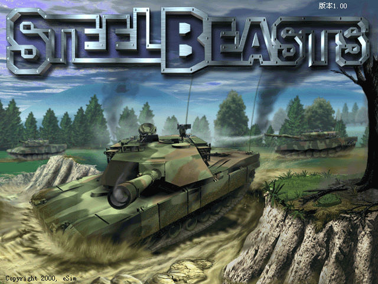
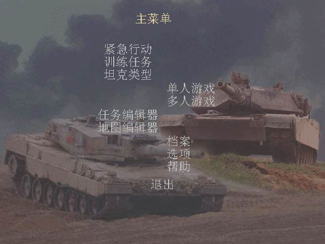
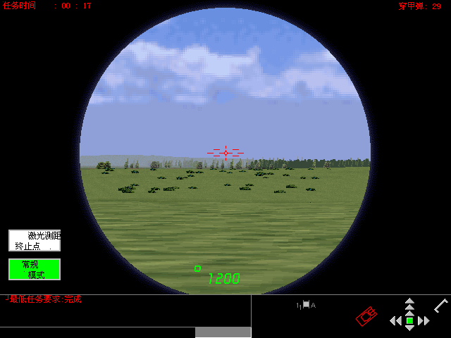

名稱：鋼鐵猛獸／地獄機甲 (Steel Beasts，簡中／英文版)
簡介：eSim 2002年出品的坦克戰鬥模擬遊戲，由Shrapnel代理發行，大陸由天人互動簡中化
並代理發行 [待補]。



備註：本版為簡中版，缺簡中光碟。
保護：無
備註：簡中版為1.00版，英文黃金版為1.226版。
備註：簡中版在XP以上系統執行時，要設定tankSim.EXE為Win9x相容。
備註：簡中版若執行後沒有顯示簡中文字，可將tanksim.chs後面加上.exe，然後直接執行此
執行檔（不必設定Win9x相容）。